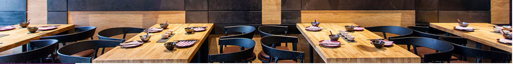

在我们菜单上有65%以上的蔬菜来自于我们自营协作农场。我们希望能尽快达到100%。吃得健康又开心，是我们最大目标。
由紫色蒜头主厨精选美味前菜，带给您新鲜轻食体验！
鸡腿肉、苹果、人参、枸杞
生菜、秋葵、玉米、小蕃茄、橙
肉松、皮蛋、豆腐
鱿鱼、虾仁、龙口粉丝、小蕃茄
磨菇、蟹味菇、白玉菇、姬菇
木耳、美人椒、姜沫、蒜
木耳、花生、面筋、黄茄素
喝汤不仅有利健康，更能补充人体营养且易被有机体所吸收！
排骨、冬瓜、风梨、小鱼、地瓜
鸡肉、绍兴酒、苹果、人参
南瓜、蟹肉、醋、胡萝卜、黄沪葱
虱目鱼小肚、姜丝、葱、米酒
蚵仔、姜、葱、米酒
一吃忘不了的滋味就在紫色蒜头！
味增、松板肉、小蕃茄、香葱
排骨、红椒、黄椒、蒜(口味偏甜)
排骨、蒜、姜、美人椒、椒盐粉
烧肉、蒜苗、小香芹
牛肉、香根、蒜、辣度1
丝瓜、西兰花、娃娃菜、有机芦笋
木耳、西芹、红椒、黄彩椒、甜豆
豆豉、蚵仔、蒜苔
一杯酒、一勺油，一杯香浓酱汁，出醇香诱人美味料理！
鸡肉、土豆、姜、蒜、九层塔
透抽、龙口粉丝、姜、蒜、九层塔
杏鲍菇、土豆、姜、蒜、九层塔
新鲜鸡蛋搭上香滑软嫩的豆腐，烹调出口感清新香味浓郁！
鸡肉沫、绢豆腐、姜、葱花、胡萝卜
菜脯、鸡蛋、葱花
萝卜糕、鸡蛋、培根、洋葱
鸡蛋、虾仁、葱花、培根
严选新鲜蔬菜及现刨肉片，是您不可错过的自然风味！
牛肉、鱿鱼羹、花枝羹、小贡丸、旗鱼丸
猪肉、鱿鱼羹、花枝羹、小贡丸、旗鱼丸
羊油、鱿鱼羹、花枝羹、小贡丸、旗鱼丸
鲷鱼片、鱿鱼羹、花枝羹、小贡丸、旗鱼丸
真材实料，货真价实的原则，让您体验台湾经典
猪肉、白砂糖、白酒
墨鱼、鱼浆、淀粉
虾仁、鱼糜、肥标
鸡肉、玉米、九层塔
鸡肉、黄金炸粉
猪肉、包菜、韭菜、鸡蛋、红葱头
韭菜、虾仁、豆干、鸡蛋
蚵仔、蚵仔粉、鸡蛋、杭白菜
糯米肠、香肠、香菜、辣椒酱
传统工艺烹饪而成，多层次口感与滋味！
牛肉、酸菜、姜、五香、白胡椒
卤肉、卤蛋、黄萝卜、小蕃茄
香肠、米饭、鸡蛋、洋葱、葱花
鸡肉、米饭、红葱酥、黄萝卜
贡丸、黄面、基围虾、香菜、蒜
芋头、埔里米粉、猪肉、香菇
贡丸、新竹米粉、基围虾、小香芹
三文鱼头、埔里米粉、猪肉、牛肉、香菇
品尝新鲜果汁及饮品，体验自然纯粹风味！
香蕉、苹果、黑芝麻粉、芭乐
木瓜、牛奶、炼奶
奇异果、牛奶、奇异果泥
草莓、牛奶、炼奶
火龙果、牛奶、炼奶
香蕉、牛奶、炼奶
芒果、牛奶、炼奶、芒果泥